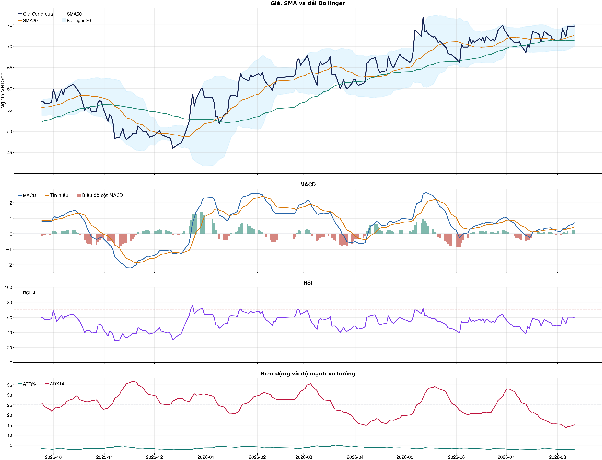
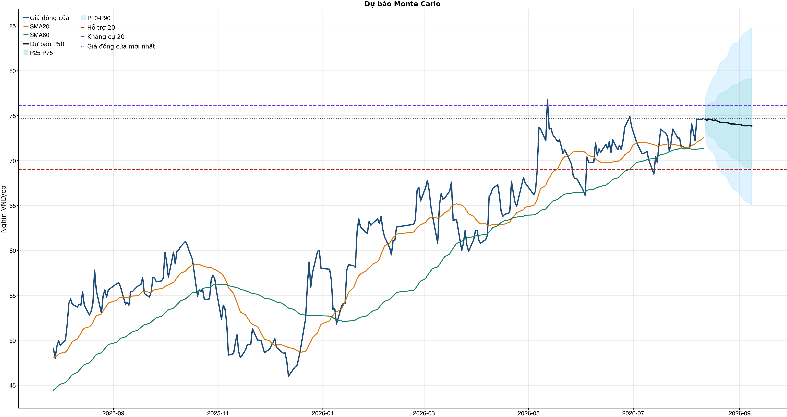
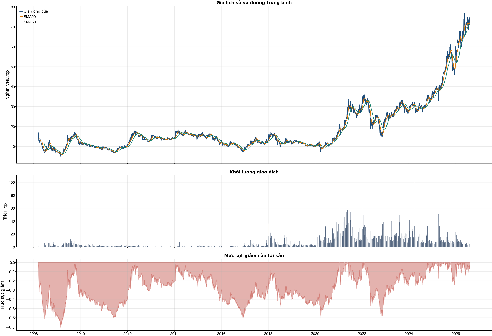

Kết quả chính
Tổng quan cơ bản
Biểu đồ kỹ thuật

Tín hiệu kỹ thuật
| Xu hướng | Tích cực | Giá nằm trên SMA20 và SMA60. |
| MACD | Tích cực | MACD trên signal, histogram dương. |
| RSI14 | Tích cực | RSI 59.4. |
| Bollinger | Ổn định | Giá nằm trong dải Bollinger. |
| ADX | Đi ngang | ADX 15.2. |
| Thanh khoản | Thấp | 0.12 lần trung bình. |
| Stochastic | Hồi phục | %K nằm trên %D. |
So sánh mô hình
| XGBoost | 0.504 | AUC 0.504 |
| Logistic | 0.513 | AUC 0.511 |
| Đa số | 0.500 | Mốc so sánh |
Kiểm thử chiến lược ngoài mẫu sau chi phí
| Lợi nhuận ròng | -13.4% | 738 quan sát ngoài mẫu |
| Sharpe | -0.48 | Sau chi phí |
| Mức sụt giảm tối đa | -19.5% | 38 vòng giao dịch |
| Chi phí giả định | 50.0 bps | Một vòng mua và bán |
Mức độ quan trọng của đặc trưng
| market_return_1d | 13.73 | Mức đóng góp |
| bb_position_20 | 11.64 | Mức đóng góp |
| volatility_20d | 11.42 | Mức đóng góp |
| return_5d | 11.35 | Mức đóng góp |
| range_pct | 11.31 | Mức đóng góp |
| beta_60d | 11.13 | Mức đóng góp |
| return_1d | 10.64 | Mức đóng góp |
| return_2d | 10.43 | Mức đóng góp |
Điều kiện phát hành tín hiệu
| AUC của mô hình | KHÔNG ĐẠT | Điều kiện phát hành tín hiệu |
| Độ chính xác cân bằng của mô hình | KHÔNG ĐẠT | Điều kiện phát hành tín hiệu |
| XGBoost vượt mô hình Logistic đối chứng | KHÔNG ĐẠT | Điều kiện phát hành tín hiệu |
| Xác suất tăng đạt ngưỡng | KHÔNG ĐẠT | Điều kiện phát hành tín hiệu |
| Bối cảnh kỹ thuật đạt ngưỡng | ĐẠT | Điều kiện phát hành tín hiệu |
| Tỷ lệ lợi nhuận/rủi ro đạt ngưỡng | ĐẠT | Điều kiện phát hành tín hiệu |
| Dữ liệu còn mới | ĐẠT | Điều kiện phát hành tín hiệu |
| Có khối lượng vị thế hợp lệ | ĐẠT | Điều kiện phát hành tín hiệu |
| Có kết quả kiểm thử chiến lược ngoài mẫu | ĐẠT | Điều kiện phát hành tín hiệu |
| Mẫu kiểm thử chiến lược đủ lớn | ĐẠT | Điều kiện phát hành tín hiệu |
| Kiểm thử chiến lược có lợi thế ròng | KHÔNG ĐẠT | Điều kiện phát hành tín hiệu |
Quản trị rủi ro
| Rủi ro/lệnh | 1.0% | 1,000,000 VND |
| Mức dừng lỗ | 71.65 | Rủi ro mỗi cổ phiếu 3.42 |
| Mục tiêu 1 | 84.80 | Lợi nhuận/rủi ro 2.84 |
| Mục tiêu 2 | 84.80 | Dự báo/kháng cự |
Phân tích cơ bản
| P/E | 45.66 | 2026-Q2 |
| P/B | 2.24 | 2026-Q2 |
| P/S | 4.14 | 2026-Q2 |
| ROE | 5.0% | 2026-Q2 |
| ROA | 0.4% | 2026-Q2 |
| Gross margin | 64.2% | 2026-Q2 |
| Net margin | 9.1% | 2026-Q2 |
| Debt/Equity | 13.20 | 2026-Q2 |
| Current ratio | 0.00 | 2026-Q2 |
| NPL | 7.5% | 2026-Q2 |
| CASA | 16.8% | 2026-Q2 |
| Dividend yield | 0.0% | 2026-Q2 |
| Market cap | 140,637.1 tỷ | 2026-Q2 |
| Revenue Growth | 28.1% | 2026-Q2 YoY |
| Profit Growth | -53.5% | 2026-Q2 YoY |
| CAPEX | -94.0 tỷ | 2026-Q2 |
| Lợi nhuận sau thuế | 1,346.7 tỷ | 2026-Q2 |
| Tổng tài sản | 892,048.6 tỷ | 2026-Q2 |
| Vốn chủ sở hữu | 62,807.2 tỷ | 2026-Q2 |
Tin tức doanh nghiệp
| Trạng thái | Có dữ liệu | research_only |
| Nguồn / số bài | VCI | 50 |
| Bài đủ timestamp | 50 | Chỉ các bài này mới được phép dùng point-in-time |
| Sentiment 5 ngày | 0.50 | 2.0 bài trước cutoff |
| Phương pháp | keyword_heuristic_v1 | Research only; chưa dùng làm tín hiệu mua/bán |
Dự báo ngắn hạn
| 2026-08-12 | 74.58 | P10 72.74 / P90 76.87 |
| 2026-08-13 | 74.46 | P10 71.71 / P90 77.71 |
| 2026-08-14 | 74.62 | P10 71.29 / P90 78.13 |
| 2026-08-17 | 74.47 | P10 70.78 / P90 79.45 |
| 2026-08-18 | 74.53 | P10 70.26 / P90 79.41 |
| 2026-08-19 | 74.38 | P10 69.54 / P90 80.05 |
| 2026-08-20 | 74.31 | P10 69.01 / P90 80.58 |
| 2026-08-21 | 74.25 | P10 68.69 / P90 80.93 |
Biểu đồ dự báo

Lịch sử giá và mức sụt giảm

Báo cáo dùng để học tập và lập kịch bản, không phải khuyến nghị mua/bán.
Phân tích AI có kiểm chứng
Trạng thái quyết định: NO_EDGE
Tóm tắt: ML decision hiện giữ nguyên NO_EDGE. Live research lưu 1 headline có URL để theo dõi thêm, nhưng chưa đọc và xác minh toàn văn nên không tạo bằng chứng mới cho quyết định đầu tư.
Kỹ thuật: Artifact kỹ thuật: bias Tích cực; điểm 6. Chi tiết artifact: Xu hướng: Tích cực (Giá nằm trên SMA20 và SMA60.); MACD: Tích cực (MACD trên signal, histogram dương.); RSI14: Tích cực (RSI 59.4.); Bollinger: Ổn định (Giá nằm trong dải Bollinger.); ADX: Đi ngang (ADX 15.2.); Thanh khoản: Thấp (0.12 lần trung bình.); Stochastic: Hồi phục (%K nằm trên %D.)
Cơ bản: Artifact cơ bản: NH Sài Gòn Tài Lộc (SACOMBANK); kỳ 2026-Q2; P/E 45.66; P/B 2.24; ROE 5.0%; ROA 0.4%; Debt/Equity 13.20; Revenue Growth 28.1%; Profit Growth -53.5%.
Tin tức: Snapshot có 1 headline từ nguồn báo chí. Đây chỉ là danh sách chủ đề cần kiểm chứng; không có nhãn sentiment hoặc dữ liệu nội dung đã xác minh nên không được diễn giải là tin tích cực/tiêu cực.
Live research: Live snapshot lấy lúc 2026-08-11T05:12:05.684284+00:00; News Reader đọc được 0 bài. ML có 5 lý do guard và vẫn là NO_EDGE. Không dùng tin live để train/backtest.
Rủi ro cần kiểm chứng
- ML guard: AUC 0.504 < 0.540
- ML guard: Balanced accuracy 0.504 < 0.520
- ML guard: XGBoost chưa vượt logistic baseline: AUC XGBoost=0.5037007763504879, AUC logistic=0.510795777717042
- ML guard: Probability 50.8% < 55.0%
- ML guard: Lợi thế OOS ròng không đạt: return=-0.13432860000000035, Sharpe=-0.4810386267184205
- Chỉ lưu trích đoạn giới hạn để kiểm chứng nguồn; không lưu hay hiển thị toàn văn bài báo.
- Phân nhóm là keyword rule-based để định tuyến research, không phải sentiment hay dự báo tác động giá.
- Dữ liệu News Reader chỉ phục vụ research/report; không dùng làm feature train/backtest khi chưa có lịch sử available_at point-in-time.
- Tin live/trích đoạn cần mở URL gốc để kiểm chứng bối cảnh, số liệu và thời điểm trước khi sử dụng.
Bằng chứng
- ML decision artifact: NO_EDGE. AUC 0.504 < 0.540
- ML decision artifact: NO_EDGE. Balanced accuracy 0.504 < 0.520
- ML decision artifact: NO_EDGE. XGBoost chưa vượt logistic baseline: AUC XGBoost=0.5037007763504879, AUC logistic=0.510795777717042
- ML decision artifact: NO_EDGE. Probability 50.8% < 55.0%
- ML decision artifact: NO_EDGE. Lợi thế OOS ròng không đạt: return=-0.13432860000000035, Sharpe=-0.4810386267184205
- Headline [Việt Báo]: VHM, VCB, TCB, STB, FPT, GMD, PHP vào danh mục đầu tư tháng 8? - Việt Báo (2026-08-05T22:01:39+00:00)
Báo cáo chỉ tổng hợp artifact đã lưu để nghiên cứu; không phải khuyến nghị mua/bán. Quyết định và vị thế vẫn bị khóa theo signal_decision.json.
Tin web đã lấy
| Nguồn | Tiêu đề | Thời điểm | Link |
|---|---|---|---|
| Việt Báo | VHM, VCB, TCB, STB, FPT, GMD, PHP vào danh mục đầu tư tháng 8? - Việt Báo | 2026-08-05T22:01:39+00:00 | Mở nguồn |
News Reader: bài đã đọc và trích đoạn
News Reader chưa đọc được bài gốc nào.
Chi tiết báo cáo tài chính
Kết quả kinh doanh — 4 kỳ gần nhất
Hiển thị 35 dòng đầu; mở CSV đầy đủ.
| Khoản mục | 2026-Q2 | 2026-Q1 | 2025-Q4 | 2025-Q3 |
|---|---|---|---|---|
| Tổng lợi nhuận/lỗ trước thuế | 2,029.9 tỷ | 2,106.2 tỷ | -3,360.1 tỷ | 3,656.9 tỷ |
| Chi phí thuế TNDN hiện hành | -683.2 tỷ | -521.8 tỷ | 595.5 tỷ | -755.6 tỷ |
| Chi phí thuế TNDN hoãn lại | 0.0 tỷ | 0.0 tỷ | 12.2 tỷ | 0.0 tỷ |
| Chi phí thuế thu nhập doanh nghiệp | -683.2 tỷ | -521.8 tỷ | 607.7 tỷ | -755.6 tỷ |
| Lợi nhuận sau thuế | 1,346.7 tỷ | 1,584.4 tỷ | -2,752.5 tỷ | 2,901.3 tỷ |
| Lợi ích của cổ đông thiểu số | 0.0 tỷ | 0.0 tỷ | 0.0 tỷ | 0.0 tỷ |
| Cổ đông của Công ty mẹ | 1,346.7 tỷ | 1,584.4 tỷ | -2,752.5 tỷ | 2,901.3 tỷ |
| Lãi cơ bản trên cổ phiếu (VND) | 0.0 tỷ | 0.0 tỷ | 0.0 tỷ | 0.0 tỷ |
| Lãi trên cổ phiếu pha loãng (VND) | 0.0 tỷ | 0.0 tỷ | 0.0 tỷ | 0.0 tỷ |
| Thu nhập lãi và các khoản thu nhập tương tự | 16,479.9 tỷ | 15,151.5 tỷ | 14,027.1 tỷ | 15,946.9 tỷ |
| Chi phí lãi và các chi phí tương tự | -10,232.7 tỷ | -9,109.5 tỷ | -8,669.1 tỷ | -8,072.5 tỷ |
| Thu nhập lãi thuần | 6,247.2 tỷ | 6,042.0 tỷ | 5,358.0 tỷ | 7,874.4 tỷ |
| Thu nhập từ dịch vụ | 3,978.3 tỷ | 1,552.4 tỷ | 1,659.2 tỷ | 1,521.8 tỷ |
| Chi phí dịch vụ | -776.3 tỷ | -802.8 tỷ | -900.8 tỷ | -848.6 tỷ |
| Lãi/Lỗ thuần từ hoạt động dịch vụ | 3,202.0 tỷ | 749.6 tỷ | 758.3 tỷ | 673.2 tỷ |
| Lãi/(lỗ) thuần từ hoạt động kinh doanh ngoại hối và vàng | 350.1 tỷ | 339.4 tỷ | 294.5 tỷ | 193.5 tỷ |
| Lãi/(lỗ) thuần từ mua bán chứng khoán kinh doanh | 0.0 tỷ | 0.0 tỷ | 0.0 tỷ | 0.0 tỷ |
| Lãi/(lỗ) thuần từ mua bán chứng khoán đầu tư | -73.1 tỷ | 75.2 tỷ | -11.6 tỷ | -0.2 tỷ |
| Thu nhập khác | 263.8 tỷ | 351.5 tỷ | 1,366.7 tỷ | 119.3 tỷ |
| Chi phí khác | -39.9 tỷ | -27.9 tỷ | -78.6 tỷ | -67.5 tỷ |
| Lãi/(lỗ) thuần từ hoạt động khác | 223.8 tỷ | 323.5 tỷ | 1,288.1 tỷ | 51.7 tỷ |
| Thu nhập từ cổ tức | 0.0 tỷ | 8.3 tỷ | 7.0 tỷ | 3.8 tỷ |
| Tổng thu nhập hoạt động | 9,950.1 tỷ | 7,538.1 tỷ | 7,694.3 tỷ | 8,796.5 tỷ |
| Chi phí quản lý doanh nghiệp | -2,825.1 tỷ | -3,408.0 tỷ | -1,822.3 tỷ | -4,095.6 tỷ |
| Lợi nhuận thuần hoạt động trước khi trích lập dự phòng tổn thất tín dụng | 7,124.9 tỷ | 4,130.1 tỷ | 5,872.0 tỷ | 4,700.9 tỷ |
| Trích lập dự phòng tổn thất tín dụng | -5,095.0 tỷ | -2,023.9 tỷ | -9,232.2 tỷ | -1,044.0 tỷ |
Bảng cân đối kế toán — 4 kỳ gần nhất
Hiển thị 35 dòng đầu; mở CSV đầy đủ.
| Khoản mục | 2026-Q2 | 2026-Q1 | 2025-Q4 | 2025-Q3 |
|---|---|---|---|---|
| Tiền mặt, vàng bạc, đá quý | 5,929.9 tỷ | 5,956.9 tỷ | 5,401.6 tỷ | 9,149.1 tỷ |
| Tài sản cố định | 6,937.7 tỷ | 7,007.0 tỷ | 7,044.6 tỷ | 7,110.5 tỷ |
| Tài sản cố định hữu hình | 4,005.2 tỷ | 4,100.7 tỷ | 4,132.3 tỷ | 4,176.7 tỷ |
| Nguyên giá TSCĐ hữu hình | 9,015.9 tỷ | 9,262.9 tỷ | 9,174.4 tỷ | 9,105.3 tỷ |
| Hao mòn TSCĐ hữu hình | -5,010.7 tỷ | -5,162.2 tỷ | -5,042.1 tỷ | -4,928.6 tỷ |
| Tài sản cố định thuê tài chính | 0.0 tỷ | 0.0 tỷ | 0.0 tỷ | 0.0 tỷ |
| Nguyên giá TSCĐ thuê tài chính | 0.0 tỷ | 0.0 tỷ | 0.0 tỷ | 0.0 tỷ |
| Hao mòn TSCĐ thuê tài chính | 0.0 tỷ | 0.0 tỷ | 0.0 tỷ | 0.0 tỷ |
| Tài sản cố định vô hình | 2,932.5 tỷ | 2,906.2 tỷ | 2,912.3 tỷ | 2,933.8 tỷ |
| Nguyên giá TSCĐ vô hình | 5,170.0 tỷ | 5,129.3 tỷ | 5,119.2 tỷ | 5,112.8 tỷ |
| Hao mòn TSCĐ vô hình | -2,237.5 tỷ | -2,223.1 tỷ | -2,206.9 tỷ | -2,179.0 tỷ |
| Bất động sản đầu tư | 13.5 tỷ | 14.0 tỷ | 14.5 tỷ | 15.0 tỷ |
| Nguyên giá bất động sản đầu tư | 39.2 tỷ | 39.2 tỷ | 39.2 tỷ | 39.2 tỷ |
| Hao mòn bất động sản đầu tư | -25.6 tỷ | -25.2 tỷ | -24.7 tỷ | -24.2 tỷ |
| Góp vốn, đầu tư dài hạn | 81.9 tỷ | 82.0 tỷ | 82.0 tỷ | 82.1 tỷ |
| Đầu tư vào công ty con | 0.0 tỷ | 0.0 tỷ | 0.0 tỷ | 0.0 tỷ |
| Đầu tư vào công ty liên doanh | 0.0 tỷ | 0.0 tỷ | 0.0 tỷ | 0.0 tỷ |
| Đầu tư dài hạn khác | 96.6 tỷ | 96.6 tỷ | 96.6 tỷ | 96.6 tỷ |
| Dự phòng giảm giá đầu tư dài hạn | -14.7 tỷ | -14.7 tỷ | -14.7 tỷ | -14.5 tỷ |
| TỔNG TÀI SẢN | 892,048.6 tỷ | 859,571.5 tỷ | 917,119.8 tỷ | 848,942.0 tỷ |
| TỔNG NỢ PHẢI TRẢ | 829,241.3 tỷ | 798,094.9 tỷ | 857,253.1 tỷ | 786,237.3 tỷ |
| VỐN CHỦ SỞ HỮU | 62,807.2 tỷ | 61,476.6 tỷ | 59,866.7 tỷ | 62,704.8 tỷ |
| Vốn điều lệ | 18,852.2 tỷ | 18,852.2 tỷ | 18,852.2 tỷ | 18,852.2 tỷ |
| Thặng dư vốn cổ phần | 1,747.7 tỷ | 1,747.7 tỷ | 1,747.7 tỷ | 1,747.7 tỷ |
| Vốn khác | 0.7 tỷ | 0.7 tỷ | 0.7 tỷ | 0.7 tỷ |
| Cổ phiếu Quỹ | 0.0 tỷ | 0.0 tỷ | 0.0 tỷ | 0.0 tỷ |
| Chênh lệch đánh giá lại tài sản | 0.0 tỷ | 0.0 tỷ | 0.0 tỷ | 0.0 tỷ |
| Chênh lệch tỷ giá hối đoái | -59.1 tỷ | -43.1 tỷ | -53.4 tỷ | 28.1 tỷ |
| Lợi nhuận chưa phân phối | 33,071.4 tỷ | 32,893.7 tỷ | 31,294.2 tỷ | 34,050.7 tỷ |
| Lợi ích của cổ đông thiểu số (trước 2015) | 0.0 tỷ | 0.0 tỷ | 0.0 tỷ | 0.0 tỷ |
| NỢ PHẢI TRẢ VÀ VỐN CHỦ SỞ HỮU | 892,048.6 tỷ | 859,571.5 tỷ | 917,119.8 tỷ | 848,942.0 tỷ |
| Tiền gửi tại Ngân hàng nhà nước Việt Nam | 18,201.8 tỷ | 16,458.8 tỷ | 18,059.3 tỷ | 17,820.5 tỷ |
| Tiền gửi tại các TCTD khác và cho vay các TCTD khác | 129,926.5 tỷ | 113,659.7 tỷ | 172,510.0 tỷ | 117,154.9 tỷ |
| Chứng khoán kinh doanh | 0.0 tỷ | 0.0 tỷ | 0.0 tỷ | 0.0 tỷ |
| Chứng khoán kinh doanh | 0.0 tỷ | 0.0 tỷ | 0.0 tỷ | 0.0 tỷ |
Lưu chuyển tiền tệ — 4 kỳ gần nhất
Hiển thị 35 dòng đầu; mở CSV đầy đủ.
| Khoản mục | 2026-Q2 | 2026-Q1 | 2025-Q4 | 2025-Q3 |
|---|---|---|---|---|
| Lưu chuyển tiền thuần từ hoạt động kinh doanh trước những thay đổi về tài sản và vốn lưu động | 7,732.0 tỷ | 3,664.1 tỷ | 5,669.7 tỷ | 5,291.8 tỷ |
| Thuế thu nhập doanh nghiệp đã trả | 0.0 tỷ | 0.0 tỷ | 0.0 tỷ | 0.0 tỷ |
| Lưu chuyển tiền thuần từ các hoạt động sản xuất kinh doanh | 17,064.7 tỷ | -58,545.4 tỷ | 57,606.8 tỷ | 11,877.9 tỷ |
| Mua sắm TSCĐ | -94.0 tỷ | -136.4 tỷ | -362.4 tỷ | -176.3 tỷ |
| Tiền thu được từ thanh lý, nhượng bán tài sản cố định | 74.5 tỷ | 0.0 tỷ | 1.0 tỷ | 57.9 tỷ |
| Tiền chi đầu tư, góp vốn vào các đơn vị khác | 0.0 tỷ | 0.0 tỷ | 0.0 tỷ | 0.0 tỷ |
| Tiền thu từ đầu tư, góp vốn vào các đơn vị khác | 0.0 tỷ | 0.0 tỷ | 0.0 tỷ | -9.4 tỷ |
| Tiền thu cổ tức và lợi nhuận được chia từ các khoản đầu tư góp vốn dài hạn | 0.0 tỷ | 8.3 tỷ | 7.0 tỷ | 13.2 tỷ |
| Lưu chuyển tiền thuần từ hoạt động đầu tư | -19.5 tỷ | -128.1 tỷ | -354.4 tỷ | -114.6 tỷ |
| Tăng vốn cổ phần từ góp vốn và/hoặc phát hành cổ phiếu | 0.0 tỷ | 0.0 tỷ | 0.0 tỷ | 0.0 tỷ |
| Cổ tức trả cho cổ đông, lợi nhuận đã chia | 0.0 tỷ | 0.0 tỷ | 0.0 tỷ | 4,275.7 tỷ |
| Lưu chuyển tiền thuần trong kỳ | -1,444.3 tỷ | -24.4 tỷ | -432.8 tỷ | 499.4 tỷ |
| Tiền và các khoản tương đương tiền tài thời điểm đầu kỳ | 135,785.0 tỷ | 194,472.6 tỷ | 137,734.5 tỷ | 125,490.5 tỷ |
| Điều chỉnh ảnh hưởng của thay đổi tỷ giá | -16.1 tỷ | 10.4 tỷ | -81.5 tỷ | -18.6 tỷ |
| Tiền và các khoản tương đương tiền tại thời điểm cuối kỳ | 151,369.9 tỷ | 135,785.0 tỷ | 194,472.6 tỷ | 137,734.5 tỷ |
| Tiền thuế thu nhập thực nộp trong kỳ | -694.3 tỷ | -114.5 tỷ | -50.9 tỷ | -761.6 tỷ |
| Tiền gửi tại NHNN | 0.0 tỷ | 0.0 tỷ | 0.0 tỷ | 0.0 tỷ |
| Tăng/giảm các khoản tiền gửi và cho vay các tổ chức tín dụng khác | -2,398.0 tỷ | 1,207.9 tỷ | 4,891.8 tỷ | -6,060.6 tỷ |
| Tăng/giảm các khoản về kinh doanh chứng khoán | -5,974.2 tỷ | -4,041.5 tỷ | 1,729.4 tỷ | -6,487.7 tỷ |
| Tăng/giảm các công cụ tài chính phái sinh và các tài sản tài chính khác | -306.0 tỷ | 233.9 tỷ | -179.8 tỷ | -83.6 tỷ |
| Tăng/giảm các khoản cho vay khách hàng | -9,069.1 tỷ | -567.5 tỷ | -20,344.1 tỷ | -18,060.0 tỷ |
| (Tăng)/Giảm lãi, phí phải thu | 0.0 tỷ | 0.0 tỷ | 0.0 tỷ | 0.0 tỷ |
| Tăng/giảm nguồn dự phòng để bù đắp tổn thất các khoản | -367.0 tỷ | 0.0 tỷ | -4,773.3 tỷ | -0.8 tỷ |
| Tăng/giảm khác về tài sản hoạt động | -3,658.5 tỷ | 519.7 tỷ | -1,964.8 tỷ | 896.7 tỷ |
| Tăng/(Giảm) các khoản nợ chính phủ và NHNN | 17,995.4 tỷ | -9,917.3 tỷ | 21,921.7 tỷ | -4,921.7 tỷ |
| Tăng/(Giảm) các khoản tiền gửi và vay các TCTD khác | -34,427.2 tỷ | -31,548.6 tỷ | 73,566.4 tỷ | 21,789.4 tỷ |
| Tăng/(Giảm) tiền gửi của khách hàng | 47,150.3 tỷ | -17,552.7 tỷ | -22,760.4 tỷ | 16,787.3 tỷ |
| Tăng/(Giảm) các công cụ tài chính phái sinh và các khoản nợ tài chính khác | 0.0 tỷ | 0.0 tỷ | 0.0 tỷ | 0.0 tỷ |
| Tăng/(Giảm) vốn tài trợ, uỷ thác đầu tư của chính phủ và các TCTD khác | 23.4 tỷ | -3.7 tỷ | 56.1 tỷ | 1.1 tỷ |
| Tăng/(Giảm) phát hành giấy tờ có giá | 2,557.6 tỷ | -997.8 tỷ | 838.5 tỷ | 1,721.0 tỷ |
| Tăng/(Giảm) lãi, phí phải trả | 0.0 tỷ | 0.0 tỷ | 0.0 tỷ | 0.0 tỷ |
| Tăng/(Giảm) khác về công nợ hoạt động | -2,193.8 tỷ | 466.6 tỷ | -1,007.8 tỷ | 1,014.7 tỷ |
| Lưu chuyển tiền thuần từ hoạt động kinh doanh trước thuế thu nhập DN | 17,064.9 tỷ | -58,536.9 tỷ | 57,643.5 tỷ | 11,887.6 tỷ |
| Chi từ các quỹ của TCTD | -0.2 tỷ | -8.5 tỷ | -36.7 tỷ | -9.7 tỷ |
| Thu được từ nợ khó đòi | 0.0 tỷ | 0.0 tỷ | 0.0 tỷ | 0.0 tỷ |